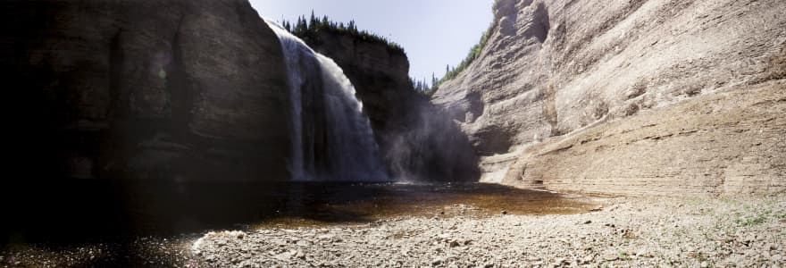
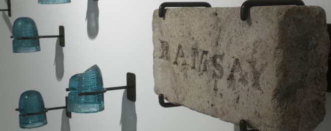

Anticoste

Perçue à la fois comme une « terre maudite » en raison des nombreux naufrages qui s’y sont déroulés dans le passé et un « paradis » pour
la grande nature qu’elle incarne, l’Île d’Anticosti n’a cessé de fasciner notre imaginaire collectif.
L’exposition Anticoste propose une série de regards où divers points de vue sur l’Île et son histoire se croisent et se confrontent dans
une série de récits de l’entre-deux.
Issus des pages racornies, des images perdues, des pierres abandonnées et de toutes ces choses que l’on croyait oubliées, ces récits nous
font naviguer entre chaos et utopie, entre beauté et hideur, entre raison et déraison.
Terre maudite
Paradis
Sept récits numériques
Anticoste présente le volet numérique de l’exposition de l’artiste Richard Baillargeon. La rose des vents permet de naviguer vers sept récits numériques qui présentent autant de facettes mythiques de l’Île Anticosti. Chacun de ces récits expose une succession de photographies, de citations et de documents d’archives.
Sept récits
Mythiques
Expérience immersive
- Afin de vivre pleinement l’expérience immersive du parcours des sept récits, activez l’affichage plein écran à l’aide du bouton en haut d’écran.
- Pour revenir en mode d’affichage régulier, appuyer sur la touche «escape» ou cliquez sur le bouton.
- La navigation entre les pages de chaque récit est possible en utilisant les flèches de votre clavier ou par balayage du doigt sur votre mobile.